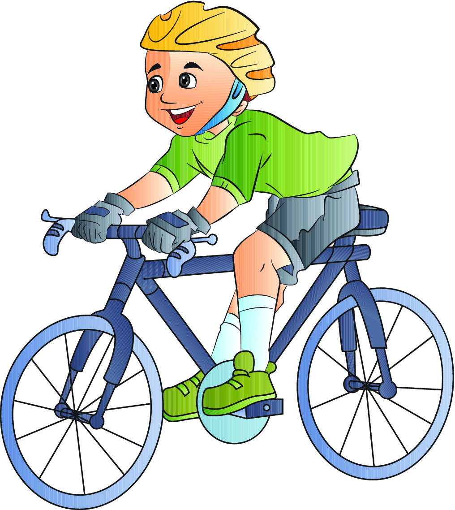
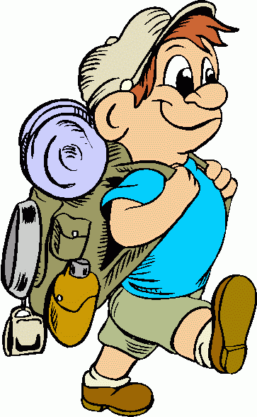
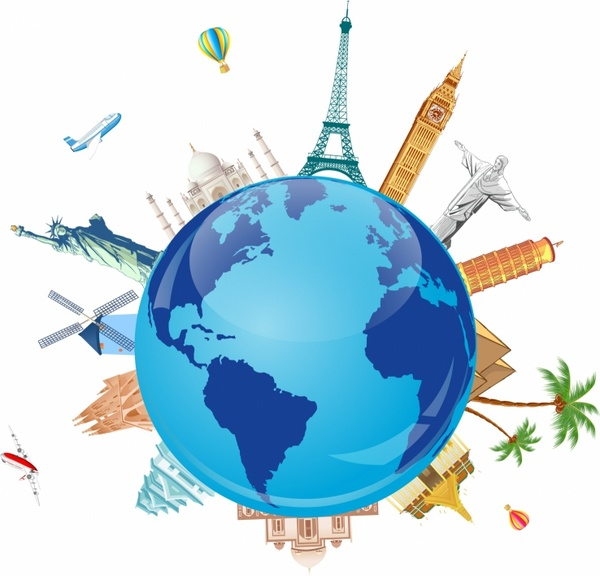

|  |  |  |
BicyklovanieBicyklovať som začal už ako 5 ročný a odvtedy ma to veľmi baví. Na svojom bicykli som už prešiel celé výhodné SLovensko. Mojím snom je prejsť na bicykli až k Jadranskému moru. |
turistikaMojou ďalšou vášňou sú hory. Rád zdolávam najvyššie vrchy Slovenska. Už som stihol vystúpiť na Ďumbier a Baníkov v Západných Tatrách. Tento rok by som chcel zdolať aj Kriváň. |
CestovanieCestovanie milujem. Ak bz sa dalo, cestoval by som niekam každý víkend. Rád spoznávam nových ľudí, nový kultúry, ich zvyky a tradície. Ak budem veľký, precestujem celý svet. Ale stále sa vrátim na Slovensko, ktoré mam aj tak najradšej. |